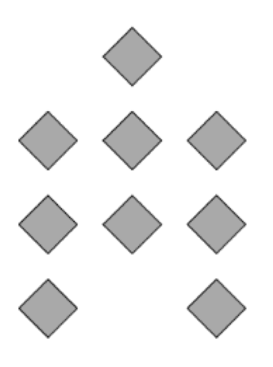
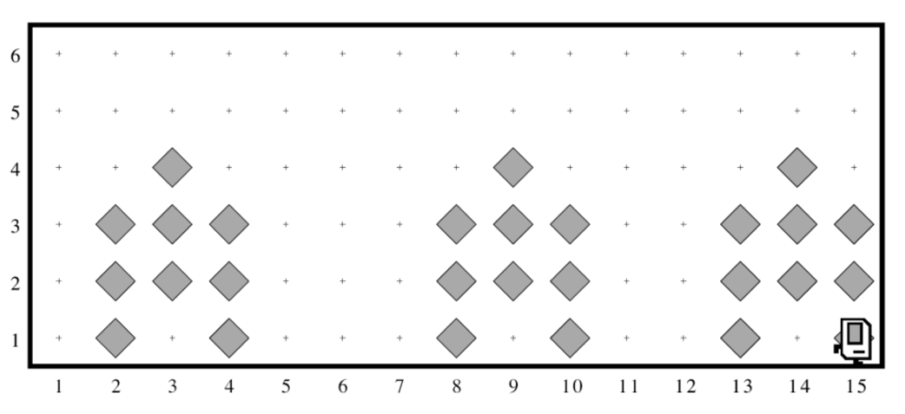

Document de section 1¶
Nations Unies Karel¶
Dans le cadre de ses plans pour aider à reconstruire les infrastructures dans le monde, les Nations Unies - c’est vrai, l’ONU utilise Karel - ont établi un nouveau programme avec pour mission d’envoyer des robots de construction de maisons pour réparer les zones endommagées par les inondations.
Votre travail consiste à programmer ces robots.
Chaque robot commence à l’extrémité ouest d’une rue qui pourrait ressembler à ceci:

Chaque bip de la figure représente un tas de débris. Le travail de Karel est de marcher le long de la rue et de construire une nouvelle maison aux endroits marqués par chaque bip. De plus, ces maisons doivent être surélevées sur pilotis pour éviter les dommages causés par la prochaine inondation. En fait, chaque maison devrait ressembler exactement à l’image ci-dessous:
{kind=link}
La nouvelle maison doit être centrée au point où le morceau de débris a été laissé, ce qui signifie que la première maison dans le diagramme ci-dessus sera construite avec son bord gauche le long de la 2e Avenue. À la fin de la course, Karel devrait être à l’extrémité est de la rue après avoir créé un ensemble de maisons qui ressemblent à ceci pour les conditions initiales indiquées:
{kind=link}
Gardez à l’esprit les informations suivantes sur le monde:
Karel commence face à l’est à (1, 1) avec un nombre infini de bips dans son sac de beeper.
Les avertisseurs sonores indiquant les emplacements où les maisons doivent être construites seront espacés de manière à ce qu’il y ait de la place pour construire les maisons sans se chevaucher ou heurter les murs.
Karel doit finir face à l’est à l’angle sud-est du monde. De plus, Karel ne devrait pas se heurter à un mur s’il construit une maison qui se prolonge dans ce dernier coin.
Rédiger un programme pour mettre en œuvre le projet Karel des Nations Unies. N’oubliez pas que votre programme devrait fonctionner pour tout monde qui remplit les conditions ci-dessus.